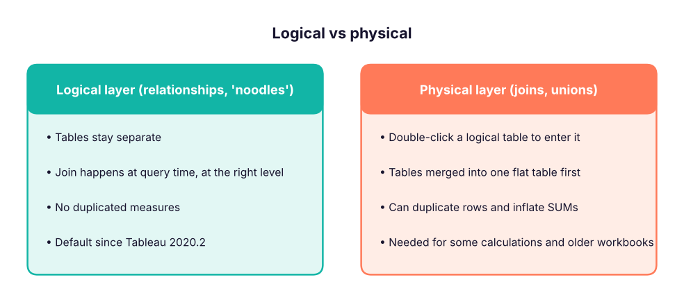
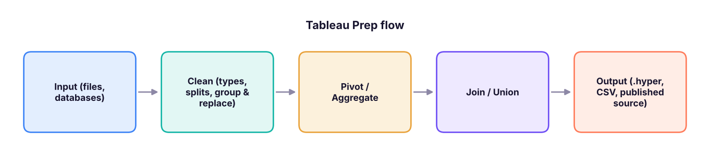

Data Modelling in Tableau: Relationships, Joins, Unions, Blending, Extracts and Tableau Prep
Combine and shape data in Tableau. Understand the logical layer (relationships) and the physical layer (joins), when to union or blend, how row duplication inflates totals, live connections vs extracts, data interpreter and pivoting, and how Tableau Prep Builder cleans data in repeatable flows, using the Adventure Cycles star schema.
- Build a relationships-based data model and explain why it avoids duplicated totals
- Choose between relationships, joins, unions and blends
- Pivot, split and clean data on the Data Source page and in Tableau Prep
- Decide between live connections and extracts, and plan refreshes
- Explain the logical vs physical layer in an interview
The two layers of a Tableau data source

When you drag a second table onto the canvas, Tableau draws a relationship (a flexible "noodle") and asks for the matching fields. Tableau then generates the right join for each sheet, using only the tables that sheet needs and aggregating each table at its own level.
The Adventure Cycles star schema
The same star schema used in the Power BI lessons: one fact table of 9,000 sales lines and four dimension tables.
import pandas as pd
base = "adventure_cycles/"
fact = pd.read_csv(base + "fact_sales.csv")
dims = {n: pd.read_csv(base + f"dim_{n}.csv") for n in ["product", "territory", "customer", "date"]}
print("fact_sales:", fact.shape, list(fact.columns))
for n, d in dims.items(): print(f"dim_{n}:", d.shape, list(d.columns)[:6])fact_sales: (9000, 9) ['order_number', 'order_date', 'product_key', 'customer_key', 'territory_key', 'quantity', 'unit_price', 'sales_amount', 'total_cost'] dim_product: (45, 6) ['product_key', 'product', 'subcategory', 'category', 'list_price', 'standard_cost'] dim_territory: (6, 3) ['territory_key', 'territory', 'country'] dim_customer: (1200, 5) ['customer_key', 'customer_name', 'gender', 'age_band', 'territory_key'] dim_date: (1096, 6) ['date', 'year', 'quarter', 'month_no', 'month', 'weekday']
- Connect to the folder of CSVs (Text file → choose
fact_sales.csv). Drag it to the canvas. - Drag
dim_product.csvnext to it; Tableau suggests the relationship on the shared key (ProductKey). Check it in the relationship dialog. - Repeat for territory, customer and date.
- Go to a sheet: the Data pane shows each table as a folder. Build Sales by Category: Tableau relates only fact and product for this view.
Why joins can inflate totals
A join merges tables before aggregation. If a table on one side has several matching rows, the other side's rows are repeated, and SUM counts them more than once. Relationships avoid this because each table is aggregated at its own level before combining.
# A targets table at territory + year level (one row per territory per year), related to line-level sales
fact["year"] = pd.to_datetime(fact.order_date).dt.year
targets = fact[["territory_key", "year"]].drop_duplicates().assign(target=10_00_00_000) # ₹10 crore each
joined = fact.merge(targets, on=["territory_key", "year"]) # physical join at line level
print("territories x years:", len(targets), "| sales lines:", len(fact))
print("true total target: ₹", f"{targets.target.sum():,}")
print("SUM(target) after a row-level join: ₹", f"{joined.target.sum():,}")
print("inflation factor:", round(joined.target.sum() / targets.target.sum()), "x")territories x years: 18 | sales lines: 9000 true total target: ₹ 1,800,000,000 SUM(target) after a row-level join: ₹ 900,000,000,000 inflation factor: 500 x
The join repeats each territory's target once per sales line, so SUM(target) is wildly overstated. With a relationship between the sales table and a targets table on territory and year, Tableau aggregates targets at their own level and the total is correct.
Relationships, joins, unions and blends
| Method | Combines | When to use |
|---|---|---|
| Relationship | Tables at different levels, related on keys | Default for star schemas and multi-level data |
| Join (inner, left, right, full) | Columns from tables into one flat table | Same grain, or when you need row-level calcs across tables |
| Union | Rows of tables with the same columns | Monthly files, one sheet per year |
| Blend | Two separate data sources, linked in a sheet on a common dimension (orange chain icon) | Sources that cannot be joined (e.g. a Google Sheet of targets with a SQL database); aggregated before linking |
On the Data Source page, drag New Union onto a table and choose Wildcard (automatic) with a pattern such as sales_2025_*.csv. Every new monthly file in the folder is picked up on refresh, and Tableau adds a Path or Sheet column so you know where each row came from.
Cleaning on the Data Source page
| Task | Feature |
|---|---|
| Messy Excel with titles, blank rows, merged cells | Use Data Interpreter |
| Months as columns (Jan, Feb, …) | Select the columns → Pivot → rename "Pivot Field Names" to Month |
| "City, State" in one column | Column menu → Split / Custom Split |
| Wrong types | Click the type icon |
| Unneeded columns | Hide |
wide = pd.DataFrame({"region": ["East", "North"], "Jan": [120, 140], "Feb": [130, 150], "Mar": [125, 160]})
long = wide.melt(id_vars="region", var_name="month", value_name="sales") # Tableau Pivot
print(wide, "\n"); print(long)region Jan Feb Mar 0 East 120 130 125 1 North 140 150 160 region month sales 0 East Jan 120 1 North Jan 140 2 East Feb 130 3 North Feb 150 4 East Mar 125 5 North Mar 160
Live connection vs extract
| Live | Extract (.hyper) | |
|---|---|---|
| Freshness | Always current | As of the last refresh |
| Speed | Depends on the database | Fast, columnar, compressed |
| Works offline | No | Yes |
| Good for | Real-time ops, governed warehouses with fast engines (Snowflake, BigQuery, Databricks) | Most dashboards, files, slow sources, Tableau Public |
| Refresh | Not needed | Full or incremental, scheduled on Tableau Cloud/Server |
Extract options: keep only needed fields (Hide all unused fields), add extract filters, aggregate to visible dimensions, and use incremental refresh on a date or ID column for large tables.
Tableau Prep Builder
Prep is a separate app for repeatable cleaning flows. A flow is a left-to-right chain of steps:

Useful steps: Clean (profile pane shows each field's distribution; fix types, trim spaces, Group and Replace to merge spelling variants such as "Bengaluru"/"Bangalore"), Aggregate, Pivot (columns to rows and back), Join (with a join-clause summary that shows unmatched rows), Union, New Rows (fill missing dates) and Script (Python/R). Outputs can be scheduled with Tableau Prep Conductor on Cloud/Server.
Summary
- Relationships (logical layer) are the default; they join at query time at the right level and avoid duplicated totals.
- Joins flatten tables first and can inflate SUMs when grains differ; unions stack rows; blends link separate sources per sheet.
- Use Data Interpreter, Pivot and Split for quick fixes; use Tableau Prep for repeatable flows.
- Extracts are fast snapshots; live connections are always current.
1. Sales lines are joined to a territory-level targets table and SUM(Target) is far too high. Why?
2. Twelve monthly CSVs with identical columns should be combined. Which method?
3. When is data blending the right choice?
4. Your Excel sheet has a title row and merged headers. What helps first?
5. Which is TRUE about extracts?
6. Where do relationships live?
Build a relationships model of the Adventure Cycles tables and a sheet of Sales by Category and Country. Then create a small targets table (Country, Year, Target) in Excel, relate it on Country and Year, and show Sales vs Target as a bullet chart. Finally, simulate the join problem: join the targets instead, and compare SUM(Target).
Show solution
Relate fact_sales to each dimension on its key; relate the targets table to the territory dimension on Country (and to the date table on Year). With relationships, SUM(Target) by Country equals the targets you typed. With a physical join to the fact table, each target repeats per sales line and the sum is inflated.
Q: Relationships vs joins in Tableau? Relationships keep tables separate in the logical layer and Tableau generates the right joins per query, aggregating each table at its native level, so totals are not duplicated. Joins merge tables in the physical layer into one table before aggregation, which can duplicate rows when grains differ.
Q: When would you use data blending? When the data is in separate sources that cannot be related in one data source, such as a published data source plus a local spreadsheet of targets. Blends link on common dimensions and aggregate the secondary source first; they are slower and less flexible than relationships.
Q: How do you make a slow dashboard faster? Use an extract with only needed fields and rows, data source or context filters, fewer marks and quick filters, avoid high-cardinality filters showing all values, and check the Performance Recorder.
Practise more online
Free, trusted places to test yourself on this topic. Links open the original site in a new tab.